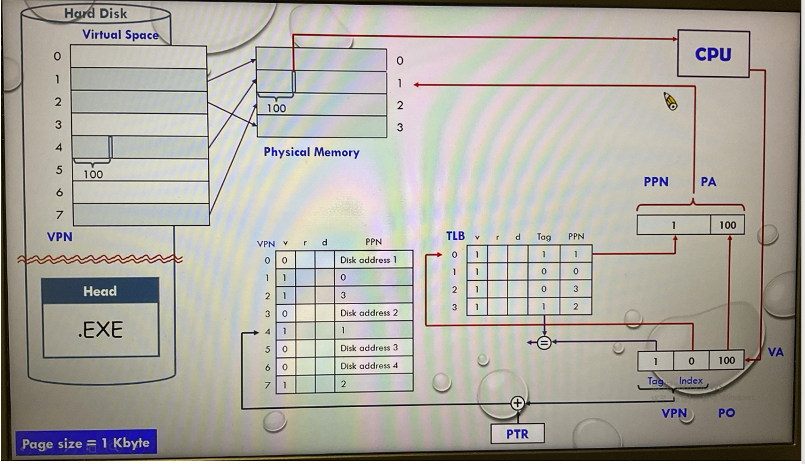
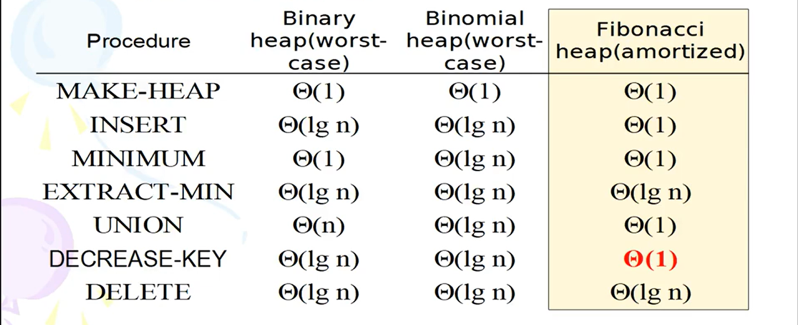
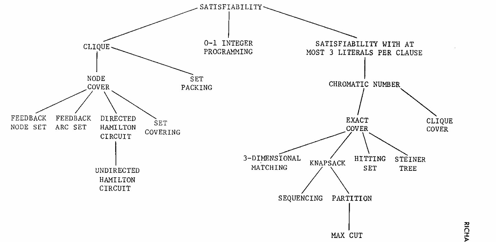

In general, hash table (Suppose that the size of the hash table is much adequately larger than the maximum number of possible entries. Therefore, very few data collision occurs.) is the most commonly used one for constructing a symbol table of a compiler.
Memoization是一種優化技術,透過將函式執行後的結果暫存起來(快取)，當下次再次以相同參數呼叫時,就能直接從快取中提取結果,而無需重新計算,藉此提升程式執行速度。

Multilevel paging: 假設每個 page table 剛好佔一個 page
「每個 page table 剛好佔一個 page」的設計，使得記憶體配置、位址切割、硬體查表與效能實作都能保持規則、對齊、且高效。
| 原因 | 說明 |
|---|---|
| 1️⃣ 管理方便 | 作業系統配置實體記憶體時以「頁 (page)」為最小單位。若每個頁表剛好佔一頁，則建立、釋放與置換都能以整頁為單位進行，管理簡單且不浪費空間。 |
| 2️⃣ 位址切割整齊 | 若每頁表剛好一頁，則「每層索引 bits」=log₂(頁內可放的表項數)。這讓虛擬位址可整齊分為： ‧ 第1層索引 bits ‧ 第2層索引 bits ‧ offset bits |
| 3️⃣ 查表邏輯簡化 | 每層頁表的每個表項剛好對應下一層page table的一個「整頁起始位址」。硬體 (MMU) 查表時不需考慮跨頁問題。 |
| 4️⃣ 對齊整潔 (alignment) | 所有page table都與實體記憶體的frame邊界對齊，運算中只需簡單位元偏移計算。 |
| 5️⃣ 效能與硬體實作簡化 | 若page table可跨頁，硬體必須處理跨page邊界，邏輯與記憶體取用會更複雜、速度更慢。 |
| 狀況 | 是否要查 Page Table(主記憶體) | 是否要取資料(主記憶體) | 總次數 |
|---|---|---|---|
| TLB hit + cache hit | ❌ | ❌ | 0 次主記憶體存取(全cache命中) |
| TLB hit + cache miss | ❌ | ✅ | 1 次(從 memory 取資料) |
| TLB miss + cache hit | ✅ | ❌ | 1 次(查 page table) |
| TLB miss + cache miss | ✅ | ✅ | 2 次(最糟情況) |
| 類型 | 觸發來源 | 性質 | 目的 |
|---|---|---|---|
| Interrupt(中斷) | 由 硬體裝置 或 外部事件 觸發 | 非同步 (asynchronous) | 告訴 CPU 某件外部事件需要立即處理，如鍵盤輸入、磁碟 I/O 完成 |
| Trap(陷阱) / System Call(系統呼叫) | 由 使用者程式 主動執行軟體指令觸發 | 同步 (synchronous) | 讓使用者程式請求作業系統服務(如開檔、寫檔、分配記憶體) |
Interrupt ──► 硬體事件觸發 → 進入核心處理 → 回到使用者程式
Trap ──► 軟體事件觸發 → 進入核心處理 → 回到使用者程式
└── System Call = 使用者主動呼叫作業系統服務的 Trap
trap or interrupt flow :
1.事件發生 (trap or interrupt issued)
→ 當使用者程式執行異常、發出系統呼叫 (trap)，或外部裝置產生中斷 (interrupt) 時，會觸發此流程。2.控制權轉移 (control transfer)
CPU 透過中斷向量表 (Interrupt Vector Table) 或陷阱向量表 (Trap Vector)，跳轉到作業系統對應的中斷／陷阱服務常式 (Service Routine)。3.模式切換 (mode bit switch)
● CPU 將模式位元 (Mode Bit) 設為 Kernel Mode。● 系統進入核心模式後, CPU 可存取所有受保護的資源與硬體。
4.執行服務程式 (Interrupt/Trap Service Routine)
● Service routine是作業系統的一部分。● 核心根據中斷號碼或陷阱代號 (Trap ID) 判斷是何種事件並執行對應的服務。
5.保存與恢復狀態 (Save and Restore Context)
● 核心會先儲存當前的 CPU 狀態（暫存器、程式計數器等），以便事件處理結束後能恢復原執行狀態。● 事件處理完成後，核心會將先前保存的狀態恢復。
6.執行相應的服務或例外處理 (Service or Exception Handling)
● 若為系統呼叫 → 執行對應的核心服務。● 若為硬體中斷 → 讀取裝置狀態或完成 I/O 處理。
● 若為例外 (Exception) → 採取錯誤處理機制（例如除以零錯誤、記憶體違例等）。
7.返回使用者程式 (Return to User Program)
● 處理完成後，控制權傳回被中斷或陷阱發生前的程式位置。● CPU 模式切回 User Mode,恢復正常程式執行。
system call flow :
1.使用者程式發出 Trap 指令(issue a trap)
→ 用來「呼叫 (invoke)」系統呼叫。2.控制權轉移 (control transfer)
CPU 透過 Interrupt Vector 或 System Call Vector,跳轉至作業系統對應的 Service Routine(服務常式)。3.模式切換 (mode bit switch)
● CPU 將 Mode Bit 設為 Kernel Mode。● 現在 CPU 擁有完整的系統資源存取權限。
4.執行系統呼叫服務程式 (System Call Service Routine)
● Service routine 是作業系統的一部分。● Kernel 檢查the interrupting instruction(or System Call ID) to determine what system call has occured.
5.解析與檢查參數 (Parameter Passing)
● 系統呼叫參數 (system call parameters) 說明使用者想請求的服務。● 參數傳遞方式可能有: registers, stack, memory(以指標傳遞給核心)
6.kernel檢查請求是否合法
● 若參數正確 → 執行請求的服務。● 若不合法 → 傳回錯誤碼給使用者程式。(例如「Permission Denied」或「Invalid Argument」)
7.完成服務後返回
● kernel完成系統呼叫的動作後, 將控制權 (control) 傳回到「系統呼叫指令的下一條指令」。● 模式切回 User Mode,繼續執行使用者程式。
The comparison-based sorting algorithm on n data requires \(Ω(nlogn)\) time
\(f(n)\)為polynomial-bounded\(\iff\) \(logf(n)=O(logn)\)
\(log(n!)=Θ(nlogn)\)
\(H(n)=1+1/2+1/3+1/4+...+1/n,∀ n \in \mathbb{Z}^{+} , H(n)=Θ(logn)\)
Methods of Proof: \(\text{direct method, contrapositive method}(P \implies Q \equiv \neg Q \implies \neg P \equiv \neg P \lor Q) \text{and contradiction method(反證法)}\)
Open interval: \( \{ x \mid a < x < b \} \), 以\(\left( a,b \right)\)表示之, a ○───────○ b
Closed interval: \( \{ x \mid a \le x \le b \} \), 以\(\left[ a,b \right]\)表示之, a ●───────● b
Cantor's Theorem:For two arbitrary infinitely countable sets A and B, both \(2^A\) and \(2^B\) are uncountable.
Truth Table
| P | Q | Conjunction AND P∧Q | Disjunction OR P∨Q | Negation NOT ~P |
|---|---|---|---|---|
| T | T | T | T | F |
| T | F | F | T | F |
| F | T | F | T | T |
| F | F | F | F | T |
(a)onto (b)one-to-one (c)one-to-one且onto

(a)\(onto: \forall \text{y} \in \text{Y}, ∃ \text{x} \in \text{X } \text{s.t.} \text{ f(x)=y}\) (b)\(1-1: f(x_1)=f(x_2) \implies x_1=x_2\)
Different types of distances used in ML
Minkowski distance:
\[
\left( \sum_{i=1}^{n} |x_i - y_i|^p \right)^{\frac{1}{p}}
\]
Euclidean distance: (Minkowski distance → p is 2)
\[
\sqrt{\sum_{i=1}^{n} (x_i - y_i)^2}
\]
Manhattan distance: (Minkowski distance->p is 1)
\[
\sum_{i=1}^{n} |x_i - y_i|
\]
Chebyshev distance: (Minkowski distance->p is ∞)
\[
\lim_{p\to\infty} \left( \sum_{i=1}^{n} |x_i - y_i|^p \right)^{\frac{1}{p}}=\max_i |x_i - y_i|
\]
Hamming distance:
\[
\sum_{i=1}^{n} [x_i \neq y_i]
\]
scalability interoperability sustainability
| 類型 | 圖的性質 | 主要演算法 | 找到的東西 | 時間複雜度 |
|---|---|---|---|---|
| SCC(Strongly Connected Components) | 有向圖 (Directed Graph) | Kosaraju's Algorithm、Tarjan's SCC Algorithm | 強連通分量 | O(V + E) |
| BCC(Biconnected Components) | 無向圖 (Undirected Graph) | Tarjan's BCC Algorithm | 雙連通分量(邊或點) | O(V + E) |

基本上這世界上的問題可以分類為：
(1) Unsolvable Problem
(2) Intractable Problem
(3) NP-Problem
(4) P-Problem
(1) Unsolvable Problem
(2) Intractable Problem
(3) NP-Problem
(4) P-Problem
若\(\text{A}≤_p\text{B}\), 則\(\text{B}\)為polynomial-time solvable \(\implies \) \(\text{A}\)為polynomial-time solvable
若\(∃\)一個\(\text{NP-complete}\)的問題為polynomial-time solvable, 則\(\text{P}=\text{NP}\)
P:\(A \in \text{P} \), \(\text{B}≤_p\text{A}\), 則\(\text{B}\)為P
NP-hard:\( \forall A \in \text{NP} \), \(\text{A}≤_p\text{B}\), 則\(\text{B}\)為NP-hard
NP-complete:若\(A \in \text{NP} \)且\(\text{A}\)為NP-hard, 則\(\text{A}\)為NP-complete
(a)若\(\text{P}≠\text{NP}\) (b)若\(\text{P}=\text{NP}\)
Any problem in P can be reduced to SAT in polynomial time.
If SAT has a polynomial time algorithm, then P =NP.
SAT is NP-complete.

C/C++ operator precedence
| 優先順序 | 運算子 | 關聯性 | 說明 |
|---|---|---|---|
| 1 | () [] a->b a.b a++ a-- | 左至右 | 括號、陣列、成員存取、遞增、遞減 |
| 2 | !a、 ~a、 +a -a、 *a &a、 (type)a、 sizeof | 右至左 | 邏輯非、位元非、正負號、指標解參考/取址、型態轉換、sizeof |
| 3 | a*b a/b a%b | 左至右 | 乘法、除法、餘數 |
| 4 | a+b a-b | 左至右 | 加法、減法 |
| 5 | a<<b a>>b | 左至右 | 左移、右移 |
| 6 | a<b a<=b a>b a>=b | 左至右 | 小於、小於或等於、大於、大於或等於 |
| 7 | a==b a!=b | 左至右 | 等於、不等於 |
| 8 | a&b | 左至右 | bitwise AND |
| 9 | a^b | 左至右 | bitwise XOR |
| 10 | a|b | 左至右 | bitwise OR |
| 11 | a&&b | 左至右 | logical AND |
| 12 | a||b | 左至右 | logical OR |
| 13 | a ? b : c | 右至左 | 條件運算子 |
| 14 | a=b a+=b a-=b a*=b a/=b a%=b a&=b a^=b a|=b | 右至左 | 賦值、複合賦值 |
| 15 | a, b | 左至右 | 逗號運算子 |